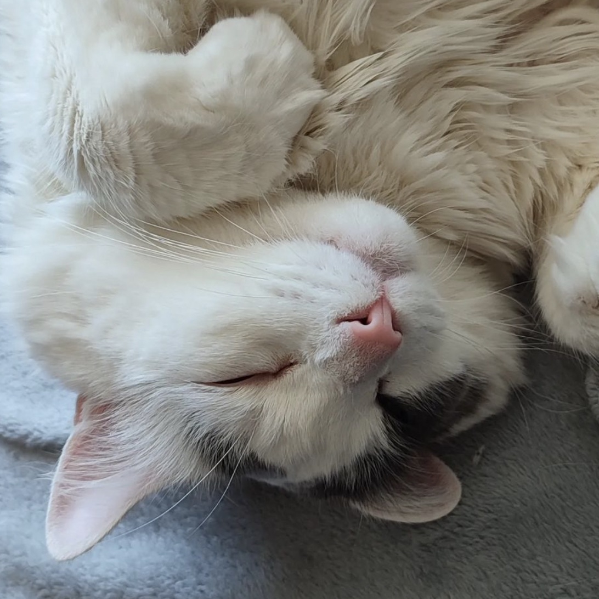
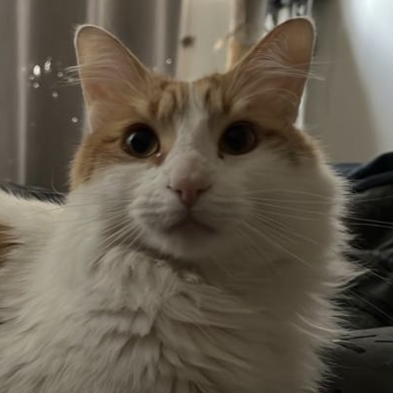
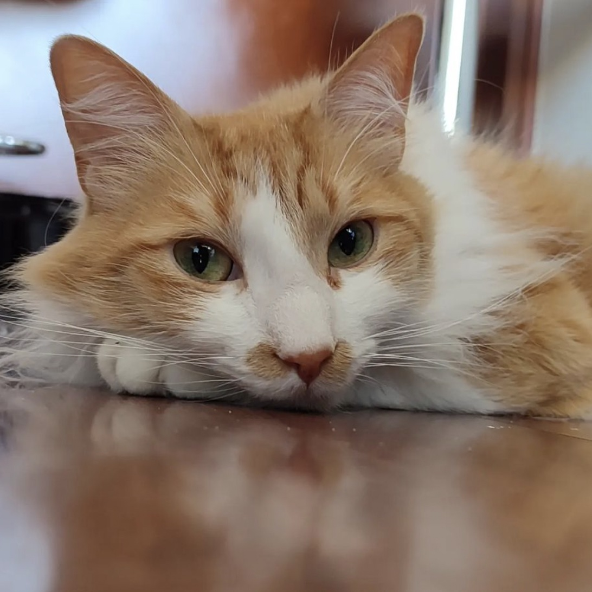

Mies
Doméstico blanco, pelo largo
Mies es un gato que fue adoptado al mes y medio de vida. Él nació el 15 de Febrero del 2017 en la ciudad de Talcahuano. Fue entregado un día sábado por una prima a Alexandra. Ella deseaba una gatita blanca, la cual se llamaría Luna. El día hábil siguiente fue llevado al veterinario, y le comunicaron a Alexandra que la gata era macho, por lo que ella tuvo que cambiar su nombre, y le coloco el apellido de uno de los padres de la arquitectura moderna "Ludwig Mies van der Rohe". Desde ese momento Mies y Alexandra han sido inseparables. Es tan gordo que se sienta en el pasillo para poder bañarse la panza. A él le encanta comer queso pero sus papás no le dan comida, sólo croquetas, premios y algunos churus mientras le cortan las uñas. Cada vez que lo levantan del piso maúlla porque quiere seguir recostado descansando y disfrutando el aire acondicionado en los días de calor.
Sobrenombres
- Gordo, Gordito
- Big Mies
- Cojín
- Baby Mies
Características
- Dormilón
- Flojo
- Hambriento
- Churu-lover
- Amante del viento entre las orejas
Hobbies
- Salir al pasillo
- Tomar sol
- Comer
- Estar en el balcón
- Ser bello
Antu
Doméstico blanco/naranjo, pelo largo
Antu es un gato que fue adoptado a los dos meses de vida en el año 2019. Él nació en la Región Metropolitana de Santiago. Fue adoptado por Rodrigo un día domingo en el Café de la Gata Horacia junto a tu hermano Otis. Él quería un gatito blanco y Antu se le acercó. Rodrigo se enamoró. En el momento que iba a decir que adoptaría a ese michi, le dijeron que debía adoptarlo con su hermano pequeño, ya que son inseparables. Antu es asustadizo y tiene una gran cola naranja, la que parece de zorrillo. Llama a sus papás de manera diferenciada y le gusta el agua fresca de su fuente. Le fascina ser peinado y que le den palmadas en el lomito, junto a la cola. También le gusta jugar con el juguete de las plumas y perseguir a las personas que no conoce y que están en su departamento. Igualmente tiene problemas porque es asustadizo y se esconde bajo la cama en caso de escuchar ruidos fuertes o a personas extrañas.
Sobrenombres
- Antuespantu
- El Celos
- Miau-Miau
Características
- Dormilón
- Asustadizo
- Jueguetón
- "Hablador"
- Amante del cariño en el potito
Hobbies
- Salir al pasillo
- Maullar
- Jugar con las bolsas de pan
- Dormir sobre su mamá
- Ser bello
Otis
Doméstico blanco/naranjo, pelo largo
Otis es un gato que fue adoptado a los dos meses de vida en el año 2019. Él nació en la Región Metropolitana de Santiago. Fue adoptado por Rodrigo un día domingo en el Café de la Gata Horacia junto a tu hermano Antu. Rodrigo quería adoptar sólo a un gato, pero decidió que adoptaría a Antu y Otis porque son inseparables. Rodrigo no se arrepiente de su decisión, ya que sus gatos son su vida y su amor. Otis es un acosador, ya que se acuesta sobre todas las personas que encuentra, sobretodo si están durmiendo y si son las 6 de la mañana. Siempre busca a sus papis para que le den agua de la llave, pero él juega con ella y moja todo el baño. Se acuesta en el teclado del papá cuando está trabajando en el computador. Aunque su personalidad es dócil y amable (además de ser el menor de la manada), sabemos que es el que manda.